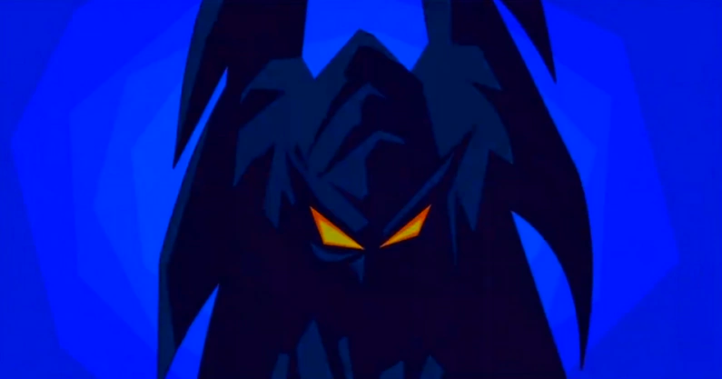

A look at the Sly Cooper series made by Sucker Punch.
In this site I want to talk about the use of orchestral and jazz music.
The game is primarily a stealth game, with Sly sneaking his way around the various maps.
The audio below is the main theme for Sly 3.
The Sly theme, along with the rest of the soundtrack, always seems to induce a subtle head bob.
The music is extremely groovy, and really enhances the feeling of stealth while playing as Sly.
Massumi talks about the bodily nature of affect, and how aspects of a game can induce
certain physical responses. In this case, the involuntary bob around to the groovy music induces
a vibe that connects you to the characters and the game. (note 1).
Here is the intro scene for Sly 4 Thieves In Time. Think about Freud's Pleasure Principle while
watching this clip.
In this intro, Sly talks about his relationship with Inspector Fox, and how he is lying about
having amnesia in order to stay with her. This is the first example of Sly seeking pleasure,
and his actions to achieve it. The next thing to note is that when Carmelita finds sly stealing
treasure, she immediately pursues him. Sly then takes off in a flash to avoid the pain of being
shocked by the pistol. This is an example of Sly giving up his relationship to avoid pain. (note 2).
Sly's family has been tormented by a character called "Clockwork" for generations, as Sly talks about in the intro of the first game. Clockwork's silhouette can be found in the sky of nearly every scene as the game leads to the final boss battle with him.
 (note 3)
As Clockwork is a known villain in the Sly universe, this gives an impression of
hailing over Sly as Clockwork watches over the night sky. You can feel his eyes
watching over you (Sly) as you play, showing that he is targeting you. In the final
episode, when you play to defeat Clockwork, he explains that he replaced all of his
body parts with mechanical machinery. He also states that he is immortal and is fueled
literally by the hate that he has for the Cooper family.
(note 1): Massumi, Brian The Autonomy of Affect)(1995).
(note 2): Freud, Sigmund "Beyond the Pleasure Principle" in The Standard
Edition translated by James Strachey (London: The Hogarth Press, 1957)."
(note 3): Althusser, Louis "Ideology and Ideological State Apparatuses". Translated by Ben Brewster